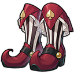

추천 광추
그녀가 보기로 결심했을 때
속도와 환락 지원
효과 자세히
효광 전광이 남을 때 결계·순환 보강.
넘치는 환락의 축복
헤르타 상점 · 환락 지원
효과 자세히
무료 5성 선택.
슈룸 모험기
망각의 정원 상점 대안
효과 자세히
무료 중첩 광추.
미래엔 우리가 함께할 거야
이벤트 보상 광추
효과 자세히
이미 획득한 경우 환락 보조 운용에 사용.
추천 유물
꿈같은 유희 속 별을 밝히는 연극인 4 · 생명의 바커 공 2
- 머리 주옵션HP부옵션속도 · 치명타 확률 · 치명타 피해 · HP%
- 손
 주옵션공격력부옵션속도 · 치명타 확률 · 치명타 피해 · HP%
주옵션공격력부옵션속도 · 치명타 확률 · 치명타 피해 · HP% - 몸통
 주옵션치명타 확률 / HP%부옵션속도 · 치명타 확률 (주옵션 제외) · 치명타 피해 · HP% (주옵션 제외)
주옵션치명타 확률 / HP%부옵션속도 · 치명타 확률 (주옵션 제외) · 치명타 피해 · HP% (주옵션 제외) - 다리

주옵션속도부옵션치명타 확률 · 치명타 피해 · HP% - 구체
 주옵션HP% / 방어력% / 공격력%부옵션속도 · 치명타 확률 · 치명타 피해 · HP% (주옵션 제외)
주옵션HP% / 방어력% / 공격력%부옵션속도 · 치명타 확률 · 치명타 피해 · HP% (주옵션 제외) - 매듭
 주옵션에너지 회복효율부옵션속도 · 치명타 확률 · 치명타 피해 · HP%
주옵션에너지 회복효율부옵션속도 · 치명타 확률 · 치명타 피해 · HP%
이 조합을 추천하는 이유
필살기 대상에게 환락도 +16%. 첫 행동과 에너지 순환은 바커 공.
천명에 응해 먼 길을 떠난 점술가 4 · 부러진 용골 2
- 머리
 주옵션HP부옵션속도 · 치명타 확률 · 치명타 피해 · HP%
주옵션HP부옵션속도 · 치명타 확률 · 치명타 피해 · HP% - 손
 주옵션공격력부옵션속도 · 치명타 확률 · 치명타 피해 · HP%
주옵션공격력부옵션속도 · 치명타 확률 · 치명타 피해 · HP% - 몸통
 주옵션치명타 확률 / HP%부옵션속도 · 치명타 확률 (주옵션 제외) · 치명타 피해 · HP% (주옵션 제외)
주옵션치명타 확률 / HP%부옵션속도 · 치명타 확률 (주옵션 제외) · 치명타 피해 · HP% (주옵션 제외) - 다리
 주옵션속도부옵션치명타 확률 · 치명타 피해 · HP%
주옵션속도부옵션치명타 확률 · 치명타 피해 · HP% - 구체
 주옵션HP% / 방어력% / 공격력%부옵션속도 · 치명타 확률 · 치명타 피해 · HP% (주옵션 제외)
주옵션HP% / 방어력% / 공격력%부옵션속도 · 치명타 확률 · 치명타 피해 · HP% (주옵션 제외) - 매듭
 주옵션에너지 회복효율부옵션속도 · 치명타 확률 · 치명타 피해 · HP%
주옵션에너지 회복효율부옵션속도 · 치명타 확률 · 치명타 피해 · HP%
이 조합을 추천하는 이유
속도 기준 치확과 첫 환락 스킬의 팀 환락도. 용골은 효과 저항 30% 조건.
밤낮의 경계를 나는 매 4 · 생명의 바커 공 2
- 머리
 주옵션HP부옵션속도 · 치명타 확률 · 치명타 피해 · HP%
주옵션HP부옵션속도 · 치명타 확률 · 치명타 피해 · HP% - 손
 주옵션공격력부옵션속도 · 치명타 확률 · 치명타 피해 · HP%
주옵션공격력부옵션속도 · 치명타 확률 · 치명타 피해 · HP% - 몸통
 주옵션치명타 확률부옵션속도 · 치명타 피해 · HP%
주옵션치명타 확률부옵션속도 · 치명타 피해 · HP% - 다리
 주옵션속도부옵션치명타 확률 · 치명타 피해 · HP%
주옵션속도부옵션치명타 확률 · 치명타 피해 · HP% - 구체
주옵션공격력%부옵션속도 · 치명타 확률 · 치명타 피해 · HP%
- 매듭
주옵션에너지 회복효율부옵션속도 · 치명타 확률 · 치명타 피해 · HP%
이 조합을 추천하는 이유
매로 필살기 뒤 행동 게이지를 25% 당기고, 바커 공으로 전투 시작 첫 행동 게이지를 40% 당깁니다.
밤낮의 경계를 나는 매 4 · 바다에 잠긴 루샤카 2
- 머리
주옵션HP부옵션속도 · 치명타 확률 · 치명타 피해 · HP%
- 손
주옵션공격력부옵션속도 · 치명타 확률 · 치명타 피해 · HP%
- 몸통
주옵션치명타 확률부옵션속도 · 치명타 피해 · HP%
- 다리
주옵션속도부옵션치명타 확률 · 치명타 피해 · HP%
- 구체
 주옵션공격력%부옵션속도 · 치명타 확률 · 치명타 피해 · HP%
주옵션공격력%부옵션속도 · 치명타 확률 · 치명타 피해 · HP% - 매듭
 주옵션에너지 회복효율부옵션속도 · 치명타 확률 · 치명타 피해 · HP%
주옵션에너지 회복효율부옵션속도 · 치명타 확률 · 치명타 피해 · HP%
이 조합을 추천하는 이유
필살기 뒤 매의 행동 당김과 루샤카의 에너지 회복효율을 사용합니다.
이 정도면 잘 키웠다
선택한 세팅 기준 · —는 확인된 수치 없음
- 공격력 전투 중
- 효광 전광 치확 참고
아군 단일 대상 스킬과 필살기로 환락도를 지원합니다.
| 스탯 | 추천 스탯 | 준종결 | 종결 |
|---|---|---|---|
| 공격력 | 전투 2200 | — | — |
| 속도 | 160+ | — | — |
| 치명타 확률 | 85%[1]효광 전용 광추의 파티 치명타 확률 10%p 참고. | — | — |
| 치명타 피해 | 100% | — | — |
세팅 기준·출처
공개 가이드에서 이 세팅의 준종결 또는 종결 수치를 확인하지 못했습니다.
스탯 조건과 각주
- 치명타 확률 · 추천 스탯 효광 전용 광추의 파티 치명타 확률 10%p 참고. ↑
- 전투·비전투 혼합
팀에 점술가 효과를 공급하고 용골의 치명타 피해를 더합니다.
| 스탯 | 추천 스탯 | 준종결 | 종결 |
|---|---|---|---|
| 공격력 | 전투 2200 | — | — |
| 속도 | 120[1]점술가 1단계 전투 전 속도 조건. | 비전투 160[2]자체 계산 · 점술가 4세트의 전투 전 속도 160 이상 구간에서 치명타 확률이 10%에서 18%로 높아집니다.자체 계산 | — |
| 치명타 확률 | 85%[3]점술가 최고 보너스 18%p와 효광 전용 광추 파티 10%p 참고. | — | — |
| 치명타 피해 | 100% | — | — |
세팅 기준·출처
점술가의 팀 환락도 효과는 중첩되지 않습니다. 이 세팅의 별도 종결 수치는 확인하지 못했습니다.
- 공격력 전투 중
- 준종결 1라운드 3행동
필살기와 전투 시작 시의 행동 당김을 함께 사용합니다.
| 스탯 | 추천 스탯 | 준종결 | 종결 |
|---|---|---|---|
| 공격력 | 전투 2200 | — | — |
| 속도 | — | 157[1]자체 계산 · 바커 공의 시작 행동 당김 40%와 전투 스킬 2회 직후 필살기로 매의 행동 당김 25%를 손실 없이 한 번씩 적용합니다. 요구 속도는 (3 − 0.4 − 0.25) × 10000 ÷ 150 초과입니다.자체 계산 | — |
| 치명타 확률 | 85% | — | — |
세팅 기준·출처
시트 속도 157의 첫 라운드 3행동 조건입니다. 속도가 변하지 않고, 두 번째 전투 스킬 직후에 필살기를 사용할 에너지가 확보되어야 합니다. 이 세팅의 별도 종결 수치는 확인하지 못했습니다.
스탯 조건과 각주
- 속도 · 준종결 자체 계산 · 바커 공의 시작 행동 당김 40%와 전투 스킬 2회 직후 필살기로 매의 행동 당김 25%를 손실 없이 한 번씩 적용합니다. 요구 속도는 (3 − 0.4 − 0.25) × 10000 ÷ 150 초과입니다. ↑
- 전투 전
루샤카로 1번 딜러를 지원하고 매로 필살기 뒤에 행동을 앞당깁니다.
| 스탯 | 추천 스탯 | 준종결 | 종결 |
|---|---|---|---|
| 공격력 | 비전투 2000+ | — | 비전투 최대 2200 |
| 속도 | 비전투 160 | — | 비전투 167 |
| 치명타 확률 | 비전투 60% | — | 비전투 70%+ |
| 치명타 피해 | 비전투 80~100% | — | 비전투 100~120% |
세팅 기준·출처
영원한 주말의 4세트 매 목표를 기준으로 합니다. 작성자는 모든 값을 비전투 수치로 표기했습니다. 공개 가이드에서 이 세팅의 준종결 수치를 확인하지 못했습니다.
성혼과 추천 돌파
보상으로 해금. 2·4단계는 팀 지원, 6단계는 개인 화력. 아하 승격으로 팀 치피와 환락 스킬 연계 보강.
1스킬 후 다음 필살기 솜씨 +2pt
최대 3스택.
2필살기 대상 환락도 +12%추천
2턴.
3전투 스킬·특성 +2 · 환락 스킬 +1
해당 스킬과 대응 강화 스킬의 레벨을 올린다.
4환락 스킬 시 적 받는 피해 +10%추천
2턴.
5필살기 +2 · 일반 공격·환락 스킬 +1
해당 스킬과 대응 강화 스킬의 레벨을 올린다.
6환락 스킬 후 자신 치피 +100%추천
3턴.
추천 파티


기본 운영과 행적
기본 운영
일반 공격으로 SP, 필요하면 스킬로 훌륭한 솜씨. 필살기는 환락 딜러에 사용해 즉시 환락 스킬을 발동한다.
행적 육성 순서
필살기 → 환락 스킬·특성 → 일반 공격·전투 스킬. 승급 6단계 자원 획득과 4단계 필살기 SP 회복.
아하 속도 계산기 →